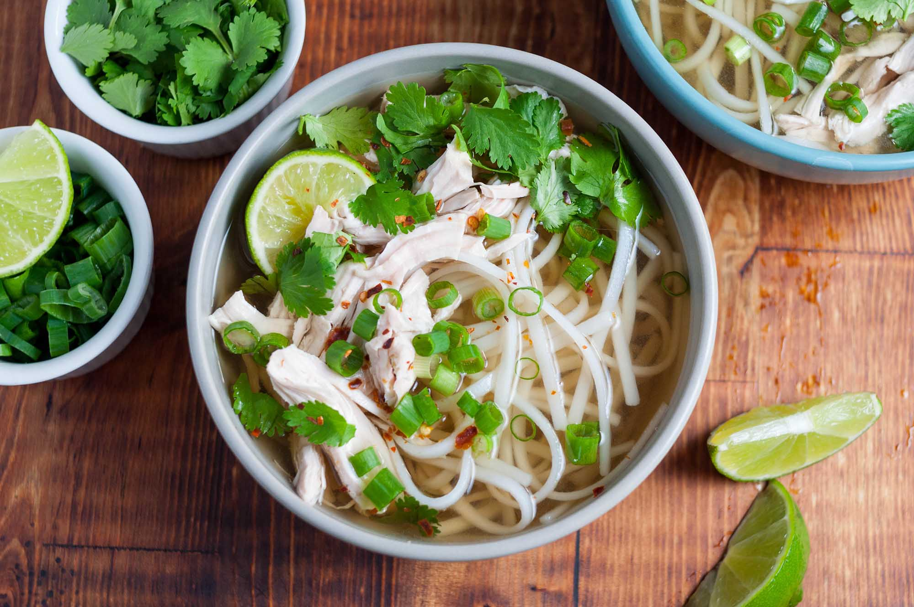

I remember very well, how I was planning my trip to Vietnam for the Tet Holiday 2018 to visit Giang and explore Vietnam. Out of boredom I installed Tinder and thought maybe I can meet a local person to learn more about Vietnam. After a few swipes I came across your profile. It was very interesting and I thought from the beginning that you are pretty. The picture of you that I added on the right, convinced me fully and I knew that I needed to get to know you. Therefore, I superliked you immediatly and was very happy when we matched. In the beginning you did not text me a lot, and I was very sad as I believed that we will not meet. But then you texted me and agreed to meet. I was very happy and immediatly set-aside all my plans in order to meet you =)).
Our first meeting was on February 2nd 2018, when you recommended me and my friends to go to a nice restaurant that serves a great selection of beers. You came from Bien Hoa to join us, but only for short.I did not know what to expect or what to think of you after the short meeting, however, I was very excited about our next meeting, were we would spent the whole day together. That day you brought me to the Vietnam War Museum, were I learned many things about a war I knew so little about and I was very thankful for your choice. We then strolled through Ho Chi Minh City and ended up in a mall, were we had a great noodle soup and a deep talk. You were very open and told me about your previous relationships, the cancelled marriage and all kind of other personal stories. I really admired your openness and your self-confidence and wanted to get to know you better. We moved then to a Cafe, in which we had amazing tea with nice Vietnamese snacks and you showed me your church performances and and your dancing. I really loved the atmosphere and the vibe between us, we got along really well. You even pointed out that the waiter is probably gay and that you have some sort of gay sensor to detect gays around you haha. I was hooked by you but also sad because I believed that I was not able to meet you again. 
On my last day, you contacted me and asked me to join you and your friends to play cards at your house in Bien Hoa. I was not sure as I did not know my way and it was far. But I really wanted to see you again. So I convinced Fredo to join me on this journey to meet you for one last time before leaving Vietnam. I had a lot of fun playing with your friends and I immedialty liked them. Even though we did not talk a lot I could feel our relationship deepening and I started to fall for you. When I left and you brought me to my grab, I did not know how to say goodbye to you, what to say? what to do? what to feel? I did not know anything, but I knew that I want to see you again. So I was very happy when you scolded me after my departure for not asking you to be my girlfriend haha. That was the start of our love journey and from there on it continued, through good times and bad times.